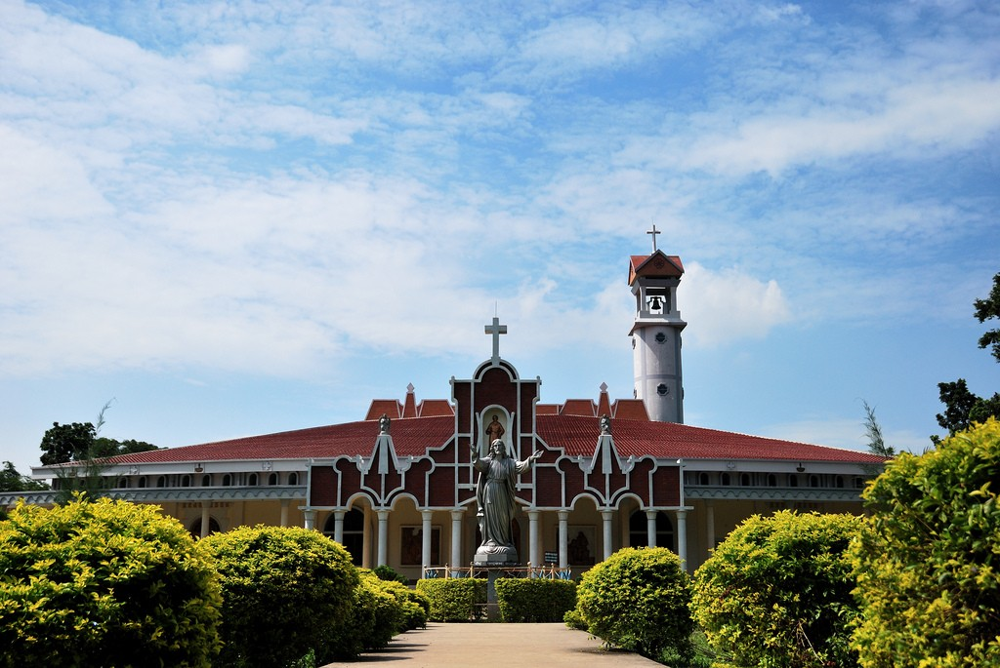

Saint Nicholas Church
Saint Nicholas Church is the second oldest church in Bangladesh which was constructed by Portuguese traders in 17th century at Nagori, Kaliganj. Kaliganj is an Upazila of Gazipur district and Nagori is a union of Kaliganj.

Bhawal Rajbari
Bhawal Estate was a large zamindari estate in Bengal in modern-day Bangladesh. The area under the estate currently falls under the Gazipur District. The most famous capital of the Bhawal Estate was Choira Meah Bari, where zamindar Fazal Gazi lived. He was one of the Baro-Bhuyans (12th zamindars of Bengal).